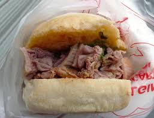

cunina toscana

lampredotto

Il lampredotto è un piatto tipico della tradizione fiorentina, un popolare cibo da strada (street food) a base di frattaglie bovine. Si tratta di una specialità del "quinto quarto" e viene preparato con l'abomaso, ovvero il quarto e ultimo stomaco del bovino.
schiacciata alla fiorentina
La schiacciata alla fiorentina è un dolce tipico del periodo di Carnevale, soffice e profumato agli agrumi. La sua preparazione tradizionale prevede l'uso dello strutto, ma oggi si usa anche il burro o l'olio.

La schiacciata alla fiorentina è un dolce tipico del periodo di Carnevale, soffice e profumato agli agrumi. La sua preparazione tradizionale prevede l'uso dello strutto, ma oggi si usa anche il burro o l'olio.
bistecca alla fiorentina

Per preparare una perfetta bistecca alla fiorentina, la ricetta tradizionale si basa su pochi e fondamentali accorgimenti, a partire dalla scelta della carne fino alla cottura, che deve essere rigorosamente al sangue.